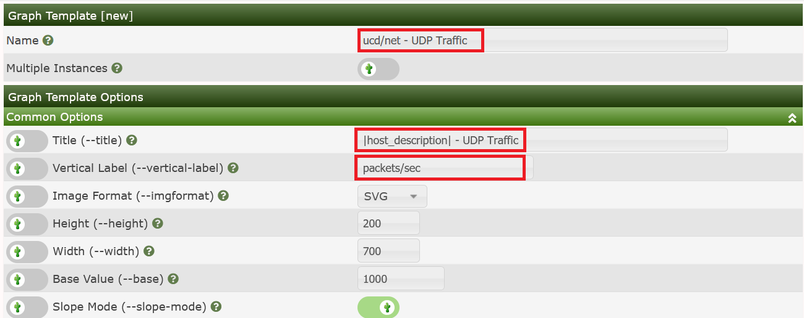

We will follow the following process in this example:
For this task, let's stick to SNMP stuff. For you to be able to reproduce this example, I've chosen the UDP information of the IP MIB.
snmpwalk -c <community string> -v1 <device> udp
UDP-MIB::udpInDatagrams.0 = Counter32: 7675
UDP-MIB::udpNoPorts.0 = Counter32: 128
UDP-MIB::udpInErrors.0 = Counter32: 0
UDP-MIB::udpOutDatagrams.0 = Counter32: 8406
As cacti does not use the MIBs but pure ASN.1 OIDs, let's search the OID used as udpInDatagrams:
snmpwalk -c <community string> -v1 -On <device> udp
.1.3.6.1.2.1.7.1.0 = Counter32: 7778
.1.3.6.1.2.1.7.2.0 = Counter32: 129
.1.3.6.1.2.1.7.3.0 = Counter32: 0
.1.3.6.1.2.1.7.4.0 = Counter32: 8514
The needed OID is .1.3.6.1.2.1.7.1.0. Now learn how to enter this into a new Cacti Data Template: Please proceed to Data Templates and filter for SNMP. Check the SNMP - Generic OID Template
After clicking Go, you're prompted with a new page to enter udp/net - udp Out Datagrams as the Title Format for the new Data Template:

Due to the filter defined above, you won't see the new Template at once, so please enter udp Out as a new filter to find:

Now select this entry to change some definitions according to the following images:


for the lower one. Please pay attention to change the MAXIMUM value to 0 to prevent data suppression for values exceeding 100. And you saw the OID .1.3.6.1.2.1.7.1.0 from above, didn't you? Please copy another one for OID .1.3.6.1.2.1.7.4.0, using the description udpOutDatagrams
Now let's generate the Graph Template for those already generated Data Templates. Please go to Graph Templates and Add a new one:

Now you have to fill in some global parameters:

and Create to see:

Now let's add some Graph Template Graph Items. They will specify, which Data Sources defined by some Data Template should be displayed on the Graph. Please click Add as shown on the last image:

Now click Save to see the resulting image below. Not that both the Graph Item and the Graph Item Input have been created.

Next, we have to add a Legend in order for people viewing the Graph in the future to obtain numeric data about the Graph contents. We will create a very simple one, though Graph Legends can be a very complex subject.
To add the Graph Legend, simply press the Add button again and fill out the Graph Item as shown in the image below. You should note that for this second Graph Item, it remembered the previous Data Source.

Press Save to see three legend items created in one step!

Now we could have continued to add the UDP Datagrams In by adding a second RRDfile Data Source to our Data Template, but we will skip that for this exercise and continue now that our Graph Template is reasonably completed.
At this point, since we only added Graph Items to the Graph Template there is no need to resave it at this point. We can simply continue to the next step.
Now, you may add this new Graph Template to any Devices that responds to the udp OID we specified in the Data Template. But in this case, please wait a moment. Let's first proceed to the Device Template and use this new Graph Gemplate for our first own Device Template.
The next task is to create a new Device Template. So, select Device under Console > Templates and press the Add button as in previous examples. When you do that, you will be presented with an page that resembles the one below.
and fill in the name of this new Template:

Now you'll find two sections added. First, let's deal with Associated Graph Templates. The Add Graph template select drop-down contains all existing Graph Templates. In the images, you will see that we are creating a Device Template for a NetApp Filer and adding some common Graph Templates and Data Queries from the Cacti built-in collection.
and Add it:

Next, let's add the Data Query already selected above:

Keep in mind, this is one of the more simple Template examples. Topics such as Data Queries, Data Input Methods, and Script Server add a few steps to the Template creation process.
Copyright (c) 2004-2024 The Cacti Group